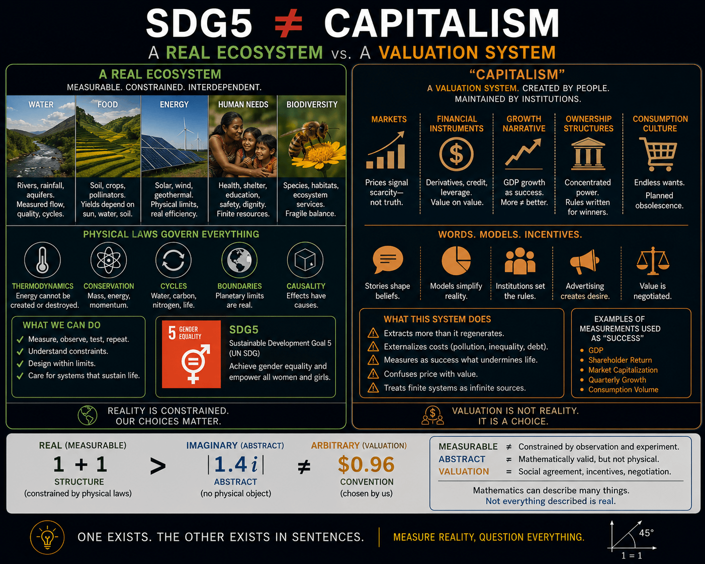

Climate Democracy
Public action guided by climate reality.
Climate Democracy prescribes what Climate Reality describes: false claims are inconsistent with the Sun’s mass, Earth’s atmosphere, and the measurable energy systems that make life possible.
$c = \sqrt{E/m} \neq -1$

Prescribes
Truthful public systems require evidence, transparency, science literacy, and collective action grounded in physical reality.
Lab Reports
Research notes, public science readings, arXiv reports, and climate-democracy specifications will be listed here.
About
Climate Democracy is the public-action companion to Climate Reality: description becomes prescription when evidence meets responsibility.